📦 Fichiers recolorisés
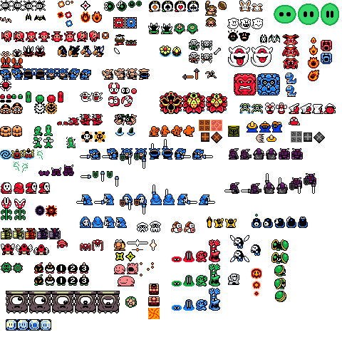
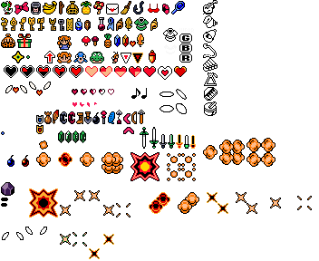
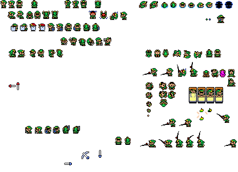
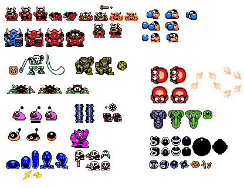
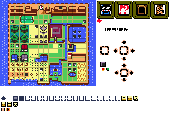
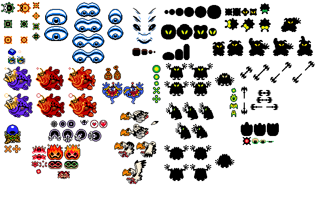
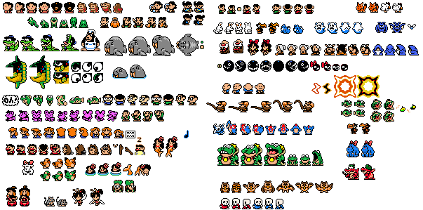
 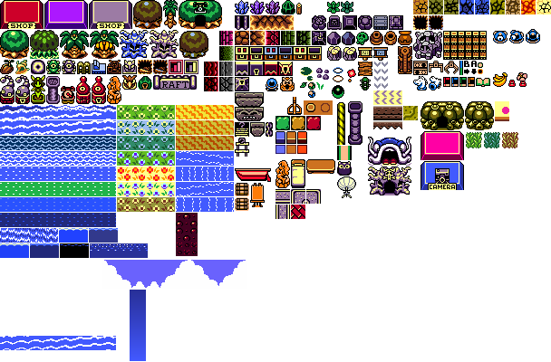
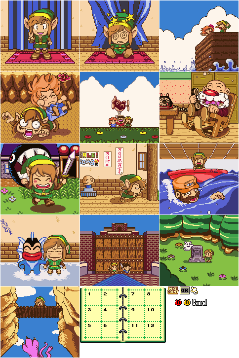
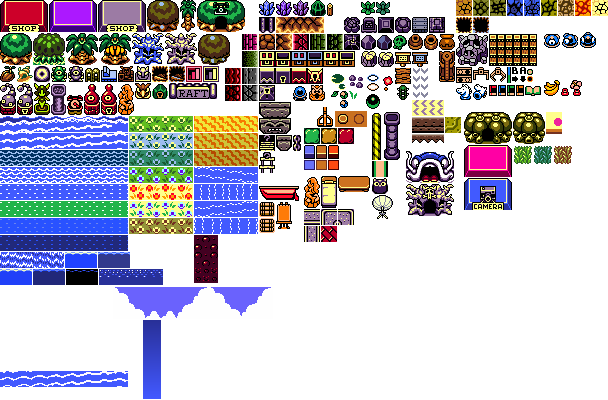
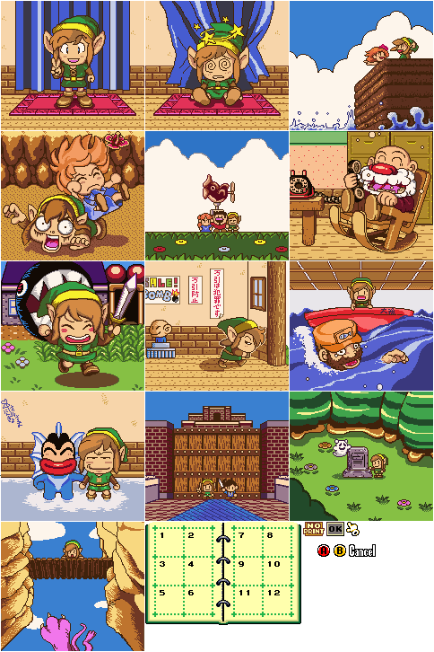
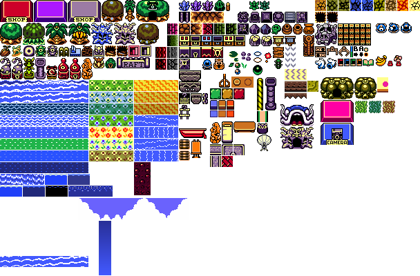
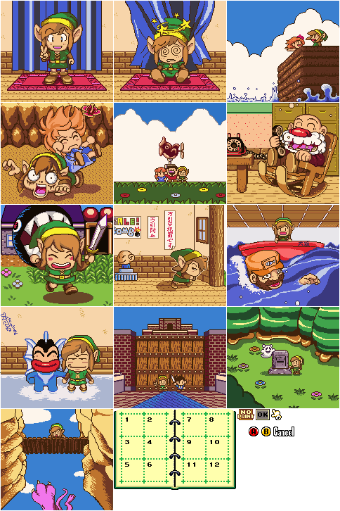
Ce projet est une reprise d’un fangame abandonné : une version non officielle de Link’s Awakening HD.
J’ai personnellement retravaillé l’ensemble des sprites en full color afin de dépasser les limitations de la Game Boy Color.
En parallèle, j’ai entièrement traduit tous les dialogues en français, y compris ceux issus des scènes de photographies, également recolorisées pour proposer une expérience totalement remasterisée.
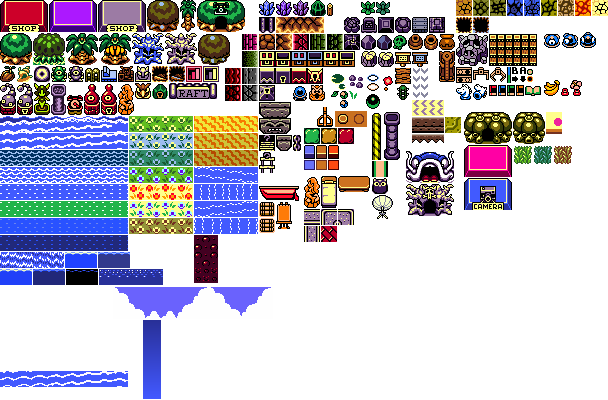
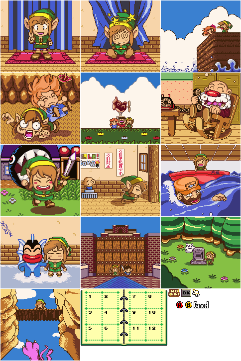
 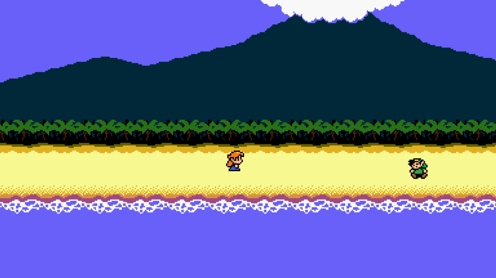
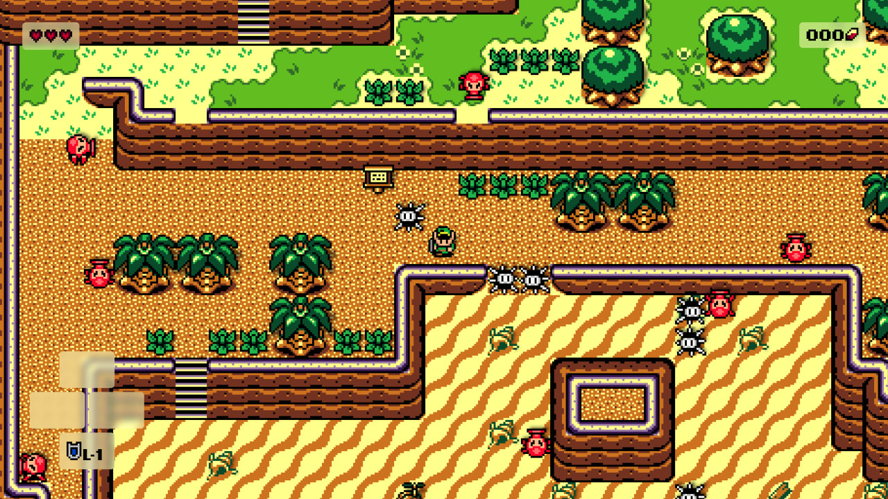
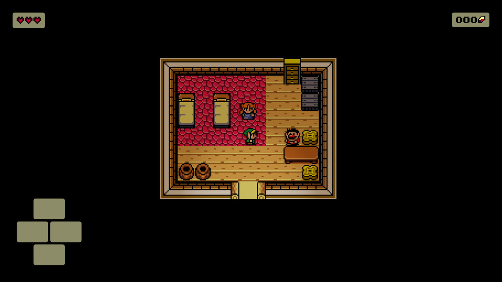
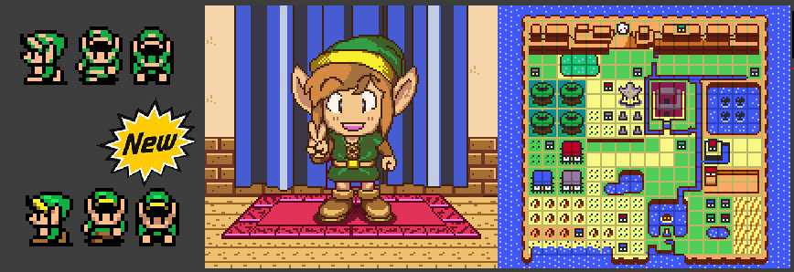
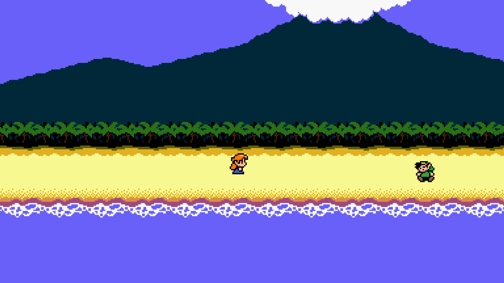
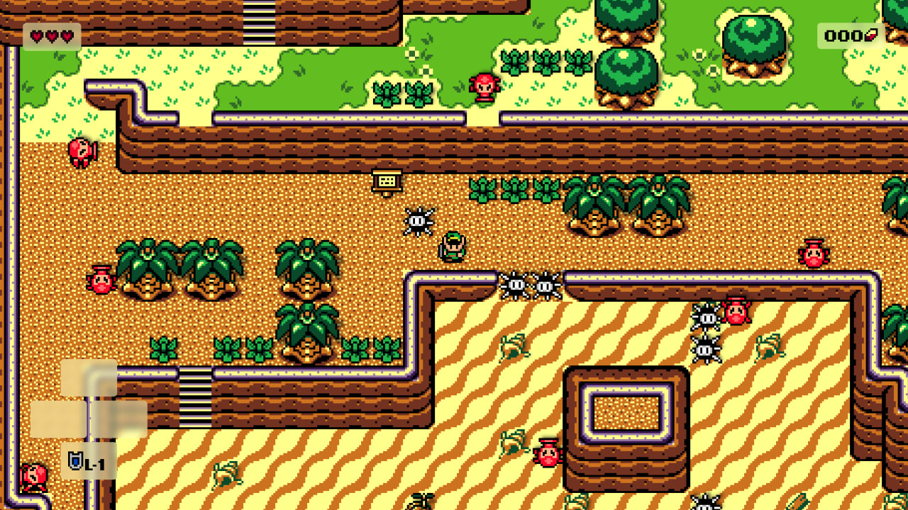
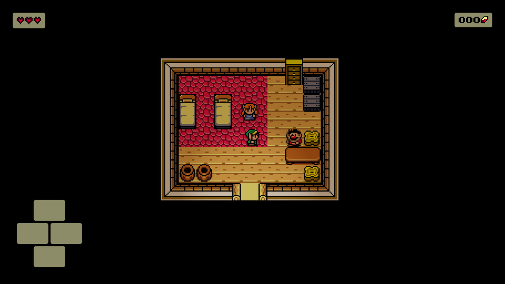
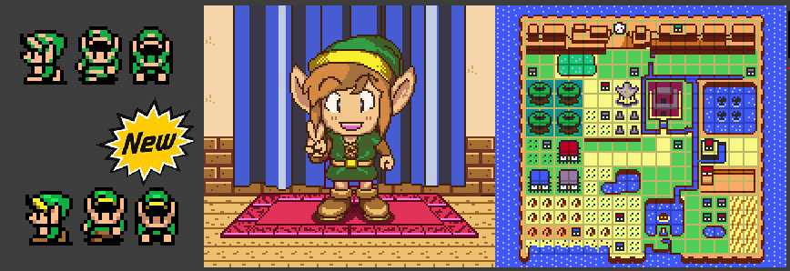